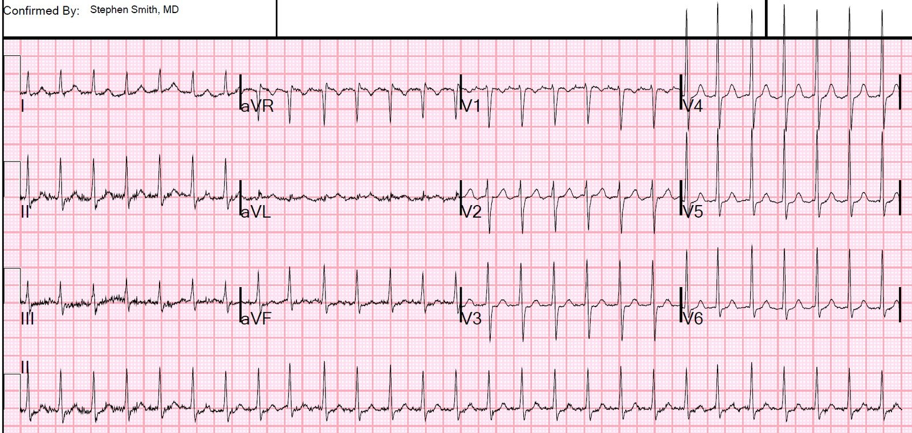
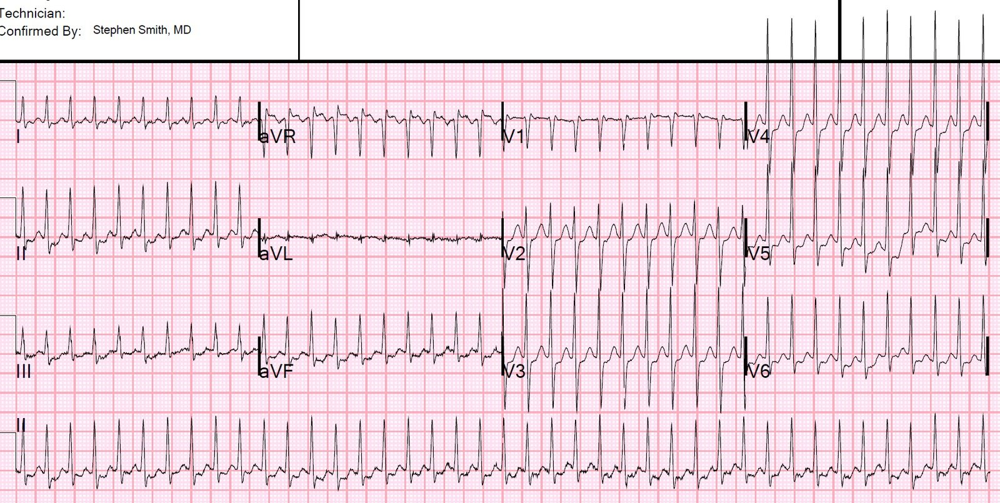
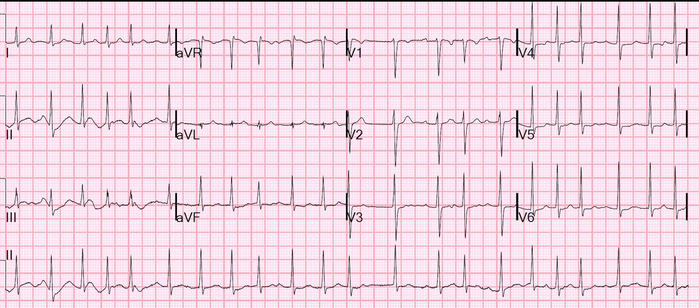
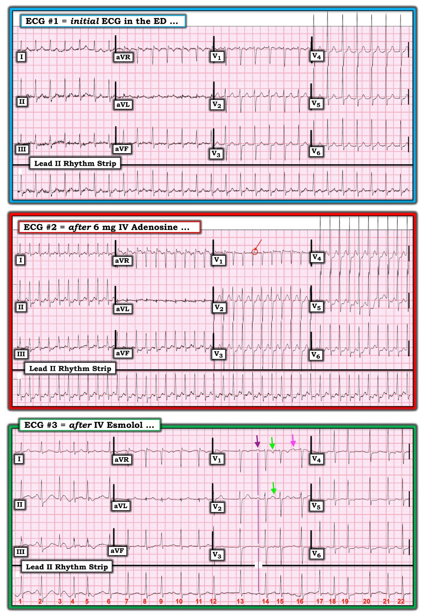

31/05/2020 — Một phụ nữ trẻ bị nhịp nhanh QRS hẹp, đều ở cả tần số 160 lẫn 240
Bản dịch tiếng Việt của bài "A Young Woman with Regular Narrow Complex Tachy at both 160 and 240" – Dr. Smith’s ECG Blog. Giữ nguyên toàn bộ 7 hình ảnh của bản gốc.
Một phụ nữ trẻ đến khám vì hồi hộp đánh trống ngực, cảm giác nặng ngực, khó thở (SOB) và mệt yếu.
Cô có tần số tim nhanh và huyết áp tâm thu 140. Cô không ở trong tình trạng nguy kịch.
Các điện tâm đồ trước viện của cô cho thấy SVT ở 2 tần số khác nhau: 160 và 240 (xấp xỉ)
Khi đến viện, đây là điện tâm đồ đầu tiên:


Không phải nhịp xoang.
Không có gợi ý nào của cuồng nhĩ.
Vậy đây là SVT kịch phát (PSVT).
Cô được tiêm tĩnh mạch 6 mg adenosine, sau đó cô chuyển về nhịp xoang được 2 nhát, rồi có vài PAC, rồi quay lại SVT với tần số 240.
Đây là điện tâm đồ của cô:


Chuyện gì đang xảy ra? Chúng ta làm gì?
Để hiểu SVT, cần hiểu cách nó khởi phát và được duy trì lan truyền:
Sinh lý bệnh
(Trích chương trong bộ EmRap compendium do Pendell Meyers và Steve Smith viết)
- “Có được là nhờ “sinh lý nút AV kép” (dual AV nodal physiology), trong đó nút AV được cho là chứa 2 đường tách ra trong chốc lát rồi nhập lại bên trong nút AV, cả hai đều dẫn truyền từ tâm nhĩ xuống bó His.
- ““Đường nhanh” (fast pathway) dẫn truyền nhanh hơn nhưng có thời kỳ trơ dài hơn “đường chậm” (slow pathway).”
- “Trong nhịp xoang, mỗi điện thế hoạt động (AP) lan truyền đồng thời xuống cả hai đường của nút AV mà không có cơ hội vào lại, vì 2 đường blốc lẫn nhau tại điểm nhập lại.
- “Khoảng thời gian bình thường giữa các nhát bảo đảm cả hai đường đều sẵn sàng cho AP tiếp theo.
- “Tuy nhiên, một nhát nhĩ sớm xuất hiện đúng thời điểm có thể đến nút AV sớm, vào lúc đường nhanh còn đang trơ nhưng đường chậm đã tái cực hoàn toàn và có thể tiếp nhận AP đang tới.
- “Khi đó AP chỉ đi xuôi dòng xuống theo đường chậm, trong lúc đó đường nhanh hoàn tất tái cực.
- “AP đến điểm nhập lại khi đó có thể đi vào đường nhanh, tiếp tục đi ngược dòng lên theo đường nhanh rồi sau đó đi xuôi dòng xuống theo đường chậm, phát AP tới cả tâm nhĩ lẫn tâm thất.
- “Điều này tạo ra một nhịp nhanh đều với sóng P ngược dòng có thể xuất hiện trước, trong hoặc sau phức bộ QRS.”
- Trong SVT do đường phụ (accessory pathway), sinh lý bệnh tương tự, ngoại trừ nhánh dẫn truyền thứ hai là đường phụ (bypass tract), không phải một nhánh khác trong nút AV.
Tại sao có 2 tần số khác nhau?
- Giả sử có CẢ 2 đường trong nút AV (dẫn truyền với tốc độ khác nhau) VÀ một đường phụ (tổng cộng 3 đường)?
- Khi đó xung có thể dùng một trong hai đường của nút AV để đi xuống (với tần số khác nhau), và dùng đường phụ làm đường đi lên.
Điểm quan trọng: Adenosine hay verapamil không làm nhịp chậm hơn tăng tốc thành nhịp nhanh hơn. Một PAC có thể khởi phát SVT đi xuống theo một trong hai nhánh của nút AV, có vẻ điều này là ngẫu nhiên. Vì vậy nhịp có thể tái khởi phát một cách ngẫu nhiên ở một trong hai tần số.
Chúng ta làm gì với nó?
Vì đây là nhịp QRS hẹp, dẫn truyền xuôi dòng của nó hẳn phải đi qua nút AV. Việc blốc tạm thời bằng adenosine xác nhận điều này.
Xử trí: Một đề xuất được đưa ra là dùng sốc điện chuyển nhịp, vì adenosine “không có tác dụng.” Tuy nhiên, adenosine đã có tác dụng. Nhưng tác dụng chỉ kéo dài vài giây. Sau đó rối loạn nhịp được tái khởi phát (trong ca này là do các PAC, vốn là lý do cơ bản khiến SVT khởi phát, như đã nêu trên).
Sốc điện chuyển nhịp sẽ không có tác dụng! Chúng ta cần hoặc:
1) ngăn rối loạn nhịp tái khởi phát, bằng cách ngăn các PAC, HOẶC
2) blốc dẫn truyền qua nút AV một cách bền vững bằng một thuốc có thời gian tác dụng tương đối dài (adenosine chỉ làm được điều này thoáng qua)
Có 2 nhóm thuốc chính cho mục đích này:
1) Chẹn kênh Ca, bằng verapamil hoặc diltiazem. Verapamil là điều trị chuẩn vào đầu thập niên 80, trước khi có adenosine. Thuốc có khả năng gây hạ huyết áp cao hơn adenosine một chút (tỷ lệ 3,5% trong một nghiên cứu lớn)
2) Chẹn beta, vừa ức chế PAC vừa làm chậm dẫn truyền qua nút AV.
Diễn biến lâm sàng
Chúng tôi quyết định dùng verapamil để blốc nút AV một cách bền vững. Verapamil là thuốc giảm co bóp cơ tim mạnh, vì vậy không bao giờ được dùng khi chức năng thất trái kém. Chúng tôi đã siêu âm tại giường, xác nhận co bóp rất tốt.
Chúng tôi tiêm 5 mg verapamil trong 2 phút.
Có thành công tạm thời, nhưng sau đó xuất hiện thêm PAC, và SVT khởi phát trở lại, lần này với tần số 240.
Nhịp cứ ngưng rồi lại khởi phát, ngẫu nhiên ở tần số 160 hoặc 240, luôn được khởi phát bởi một PAC.
Chúng tôi tiêm thêm 5 mg nữa, không mấy thành công.
Sau đó, chúng tôi chuyển sang chẹn beta. Dùng cả verapamil lẫn chẹn beta có thể nguy hiểm, do khả năng gây giảm tần số tim và giảm co bóp cơ tim nặng nề. Vì vậy, chúng tôi chọn esmolol, thuốc có thời gian bán thải ngắn và có thể ngừng nếu có tác dụng bất lợi.
Chúng tôi cho 500 mcg/kg esmolol và bắt đầu truyền liên tục 50 mcg/kg/phút.
Đây là kết quả:


Như vậy esmolol chủ yếu đang làm chậm dẫn truyền qua nút AV và chưa làm ngưng được các PAC
Không lâu sau đó, một điện tâm đồ tiếp theo và mọi dải nhịp đều cho thấy nhịp xoang không còn PAC. Esmolol đã có tác dụng.
Vì cô xét nghiệm dương tính với COVID, không làm thăm dò điện sinh lý (EP). Cô được xuất viện với thuốc chẹn beta.
Thêm về sinh lý bệnh
Đây là một giải phẫu có khả năng cho bệnh nhân hôm nay của chúng ta. Về khả năng còn lại, xem “Giải thích khác” bên dưới, và bình luận của Ken.
Tuy nhiên, ở bệnh nhân hôm nay hướng dẫn truyền sẽ NGƯỢC LẠI so với sơ đồ này. Xung đi xuống theo một trong các đường của nút AV, và đi LÊN theo đường phụ:

Ca trước: dẫn truyền ngược lên qua nút AV có thể đi qua một trong hai nhánh bên trong nút AV. Một nhánh nhanh và một nhánh chậm, và chúng có thời kỳ trơ khác nhau. Tần số của nhịp nhanh phụ thuộc vào việc xung đi lên qua nhánh nào của nút AV. Ca hôm nay: dẫn truyền xuôi chiều. Tần số phụ thuộc vào nhánh nào của nút AV đang dẫn truyền.
Giải thích khác: không có đường phụ.
Cũng có thể là KHÔNG có đường phụ, mà chỉ có 2 đường bên trong nút AV. Nếu vậy, thì trong một trường hợp, xung đi xuống theo đường nhanh và lên theo đường chậm (tạo ra tần số rất nhanh), còn trong trường hợp kia, xung đi xuống theo đường chậm và lên theo đường nhanh (tạo ra tần số kém nhanh hơn). Tuy nhiên, nếu đúng như vậy, xung vẫn phải đi qua cả một đường chậm lẫn một đường nhanh, nên vẫn khó giải thích hai tần số khác nhau TRỪ KHI tần số thay đổi tùy theo hướng đi.
Tần số phụ thuộc vào thời gian xung cần để đi trọn một vòng qua nút AV. Để hai tần số khác nhau, tốc độ dẫn truyền phải khác nhau tùy theo hướng đi của xung. Điều này là có thể.
Procainamide và amiodarone cũng được một số người đề xuất để xử trí. Tuy nhiên, chúng có tỷ lệ thành công rất hạn chế trong SVT kháng trị, đặc biệt là SVT có liên quan đến dẫn truyền qua nút AV. Bài báo này đã nghiên cứu tác dụng của chúng ở trẻ em:
https://www.ahajournals.org/doi/full/10.1161/CIRCEP.109.901629 (bài báo trên tạp chí Circulation: Arrhythmia and Electrophysiology về điều trị SVT kháng trị ở trẻ em)

===================================
BÌNH LUẬN CỦA TÔI, bởi KEN GRAUER, MD (30/5/2020):
===================================
Ca bệnh hấp dẫn do Dr. Smith trình bày (!) — về một phụ nữ trẻ đến khám vì hồi hộp đánh trống ngực và các nhịp SVT vào lại nối tiếp nhau — ban đầu với tần số thất ~160/phút — và sau đó, sau khi tiêm tĩnh mạch 6mg adenosine, là một SVT vào lại khác với tần số nhanh hơn nhiều, ~240/phút. LÀM SAO điều này có thể xảy ra?
- Để rõ ràng — tôi đã ghép 3 điện tâm đồ của ca hôm nay trong Hình 1.
- Dr. Smith đã điểm lại (ở trên) sinh lý bệnh của đường dẫn truyền kép trong nút AV, vốn chịu trách nhiệm duy trì các nhịp SVT vào lại. Tôi tập trung Bình luận của tôi vào những hiểu biết bổ sung rút ra được từ ca này.


ADENOSINE KHÔNG Phải Lúc Nào Cũng Lành Tính: Danh tiếng của adenosine như một thuốc tuyệt vời, tác dụng nhanh để điều trị các nhịp SVT vào lại đã được khẳng định vững chắc. Thuốc tác dụng ngay lập tức — với thời gian bán thải dưới 10 giây. Do đó — mọi tác dụng bất lợi có thể xảy ra hầu như luôn ngắn ngủi (thường hết trong vòng 30 đến 90 giây).
- Các tác dụng bất lợi thường gặp (vốn là điều được dự đoán trước) sau khi tiêm adenosine tĩnh mạch gồm: i) đau ngực; ii) ho (do co thắt phế quản thoáng qua); iii) giãn mạch da (đỏ bừng da thoáng qua); iv) vị kim loại trong miệng; v) buồn nôn, vã mồ hôi, bồn chồn, tê bì, choáng váng thoáng qua và cảm giác “sắp chết đến nơi”; và, vi) nhịp chậm thoáng qua có thể rõ rệt (và thậm chí có thể gây một giai đoạn vô tâm thu ngắn).
- Adenosine có thể rút ngắn thời kỳ trơ của mô nhĩ — điều này có thể khởi phát AFib ở người có cơ địa dễ mắc. Vì lý do này — cần thận trọng khi dùng adenosine ở bệnh nhân đã biết có WPW, do khả năng về mặt lý thuyết gây AFib (điều có thể gây hậu quả đáng kể ở bệnh nhân có đường phụ).
- Adenosine có thể gây tăng phản xạ trương lực giao cảm và catecholamine tuần hoàn. Điều này có thể dẫn tới tăng tần số tim; ngoại tâm thu nhĩ hoặc thất; và/hoặc tăng dẫn truyền qua đường phụ (Mallet ML: Emerg Med J 21:408-410, 2004).
- Ngoài AFib — Mallet mô tả các tác dụng gây loạn nhịp khác của adenosine (tức là việc dùng thuốc này có thể gây ra một rối loạn nhịp khác). Các tác dụng gây loạn nhịp này gồm: i) PVC và/hoặc VT không bền bỉ (kể cả đôi khi VT đa dạng và xoắn đỉnh (Torsades de Pointes), đặc biệt khi rối loạn nhịp này phụ thuộc khoảng ngưng); ii) Khởi phát các rối loạn nhịp nhĩ khác, gồm nhịp nhanh nhĩ (ATach) và cuồng nhĩ (AFlutter); iii) Tăng dẫn truyền AV ở cuồng nhĩ đã có sẵn (từ dẫn truyền AV 2:1 thành 1:1); và, iv) Tăng tốc đáp ứng thất của một SVT vào lại. Tác dụng sau cùng này có lẽ là lời giải thích cho việc tần số thất tăng một cách nghịch thường trong ca này, với các nhịp SVT nối tiếp nhau cho thấy tần số tăng từ 160/phút lên 240/phút sau khi tiêm tĩnh mạch 6 mg adenosine (Hình 1). Như Curtis và cs. đã chỉ ra (J Am Coll Cardiol 30[7]1778-84, 1997) — đường dẫn truyền kép trong nút AV mà Dr. Smith đề cập (ở trên) có thể biểu hiện độ nhạy khác nhau với adenosine tĩnh mạch. Đặc tính này có thể đã tạo điều kiện cho sự chuyển dẫn truyền xuôi chiều (đi tới) từ đường chậm sang đường nhanh của nút AV vào thời điểm tần số tim tăng lên 240/phút (điện tâm đồ #2 trong Hình 1).
ĐIỀU CỐT LÕI Về Việc Dùng Adenosine: Adenosine là một thuốc tuyệt vời — đặc biệt trong bối cảnh cấp cứu! Thuốc tác dụng nhanh. Thuốc rất hiệu quả với các nhịp SVT vào lại (cả AVNRT lẫn AVRT!). Ngoài ra:
- Adenosine có thể đóng vai trò như một “nghiệm pháp Valsalva hóa học” — trong đó adenosine được dùng như một thử nghiệm chẩn đoán/điều trị cho một nhịp nhanh QRS hẹp (nhịp SVT) chưa rõ nguyên nhân. Có lẽ adenosine sẽ chuyển nhịp nếu đó là một SVT vào lại. Nếu không — hy vọng thuốc sẽ làm nhịp chậm lại đủ (thoáng qua) để có thể đưa ra chẩn đoán xác định (giống như Valsalva … ).
- Adenosine có thể là một thuốc có giá trị khi dùng như một “thử nghiệm điều trị” cho một nhịp nhanh QRS rộng (WCT) đều, đơn dạng, chưa rõ nguyên nhân — trong đó thuốc có thể chuyển nhịp nếu WCT là hoặc một dạng VT vô căn nhạy với adenosine hoặc một nhịp SVT vào lại. Và, trong trường hợp adenosine không có tác dụng gì — các tác dụng bất lợi nói chung ngắn ngủi và được đa số bệnh nhân dung nạp tốt.
- NHƯNG — Vì adenosine không lành tính — thuốc không nên được dùng trong những trường hợp thuốc ít có khả năng có tác dụng (tức là, khi bệnh nhân có VT đa dạng hoặc xoắn đỉnh; hoặc với VT đã biết có nguyên nhân thiếu máu cục bộ) — và, tuyệt đối không được dùng cho WPW kèm AFib nhanh.
Một số Nhận xét Bổ sung về Hình 1: Như Dr. Smith đã nêu — điện tâm đồ đầu tiên tại khoa cấp cứu ( = điện tâm đồ #1) cho thấy một nhịp SVT đều với tần số ~160/phút, không có dấu hiệu rõ ràng của hoạt động nhĩ. Sau 6 mg adenosine tĩnh mạch — tần số của SVT đều tăng lên 240/phút ( = điện tâm đồ #2).
ĐIỂM THEN CHỐT (PEARL): Việc tìm dấu hiệu của hoạt động nhĩ ngược dòng trong lúc có nhịp SVT đều có thể rất hữu ích — vì điều này có thể cung cấp manh mối quan trọng về cơ chế của nhịp SVT. Tôi bàn luận và minh họa chi tiết khái niệm then chốt này trong Bình luận của tôi ở cuối bài đăng ngày 6 tháng Ba năm 2020 trên Dr. Smith’s ECG Blog. Tóm lại:
- Với thể thông thường ( = “chậm-nhanh”) của AVNRT — khoảng RP’ trong cơn SVT thường rất ngắn (tức là, sóng P ngược dòng hoặc bị ẩn trong phức bộ QRS, hoặc làm biến dạng phần cuối QRS). Đó là vì với thể “chậm-nhanh” của AVNRT — vòng vào lại tương đối nhỏ hơn, nằm hoàn toàn trong nút AV (do đó, quãng đường dẫn truyền ngược dòng ngắn — dẫn tới khoảng RP’ ngắn).
- Ngược lại, với AVRT — khoảng RP’ trong cơn SVT có xu hướng dài hơn (sóng P ngược dòng thường xuất hiện gần giữa sóng ST-T). Đó là vì vòng vào lại dài hơn, do có sự tham gia của một AP (đường phụ — Accessory Pathway) nằm bên ngoài nút AV (do đó, hoạt động nhĩ phải đi một quãng đường ngược dòng dài hơn — dẫn tới khoảng RP’ dài hơn).
- Đáng tiếc — có nhiều nhiễu đường nền ở cả điện tâm đồ #1 lẫn điện tâm đồ #2. Vì vậy — rất khó tìm dấu hiệu hoạt động nhĩ. Dù vậy — tôi đồng ý với Dr. Smith rằng dường như không có sóng P xoang, cũng không có sóng cuồng nhĩ 2:1 ở điện tâm đồ #1 hay điện tâm đồ #2.
- Tôi không thấy dấu hiệu nào của hoạt động nhĩ ngược dòng ở điện tâm đồ #1.
- Tuy nhiên — tôi có thấy một khía dương rõ rệt (giả r’ ) ở chuyển đạo V1 của điện tâm đồ #2 (mũi tên ĐỎ chỉ vào khía r’ này trong vòng tròn ĐỎ ở điện tâm đồ #2). Tôi tin rằng khía r’ này ở chuyển đạo V1 là thật — vì nó không có mặt ở chuyển đạo V1 của điện tâm đồ #1 cũng như điện tâm đồ #3. Do đó — khía r’ này ở chuyển đạo V1 gần như chắc chắn đại diện cho hoạt động nhĩ ngược dòng trong điện tâm đồ #2.
GIẢ THUYẾT CỦA TÔI (Vượt ra ngoài phần cốt lõi): Việc chúng ta thấy sóng P ngược dòng này ở điện tâm đồ #2 nhưng không thấy ở điện tâm đồ #1 gợi ý rằng dẫn truyền xuôi chiều đã chuyển từ đường dẫn truyền này sang đường dẫn truyền kia trong nút AV.
- Việc khía r’ này ở chuyển đạo V1 của điện tâm đồ #2 biểu hiện một khoảng RP’ ngắn — gợi ý với tôi rằng dẫn truyền ngược dòng nằm gọn trong nút AV (vì tôi sẽ chờ đợi một khoảng RP’ dài hơn nếu có dẫn truyền ngược dòng ẩn qua một AP).
- Tôi ngờ rằng lý do chúng ta không thấy sóng P ngược dòng nào ở điện tâm đồ #1 — là vì điện tâm đồ #1 dẫn truyền xuống theo đường dẫn truyền chậm hơn của nút AV (do đó tần số chậm hơn = 160/phút) — nhưng ngược lên theo đường dẫn truyền nhanh hơn của nút AV (khiến khoảng RP’ ngắn hơn, và sóng P ngược dòng ở điện tâm đồ #1 bị ẩn hoàn toàn trong phức bộ QRS!).
- Điều này ngược với những gì tôi ngờ là đã xảy ra ở điện tâm đồ #2 — dẫn truyền xuống theo đường dẫn truyền nhanh hơn của nút AV (do đó tần số nhanh hơn = 240/phút) — nhưng rồi ngược lên theo đường dẫn truyền chậm hơn của nút AV. Kết quả là khoảng RP’ dài hơn một chút — đủ dài để sóng P ngược dòng ló ra khỏi QRS và tạo thành một giả r’ ở chuyển đạo V1.
- Do đó — tôi cho rằng nhiều khả năng không có AP nào tham gia vào vòng vào lại (tức là, không phải AVRT) — mà thay vào đó, các nhịp SVT ở điện tâm đồ #1 và điện tâm đồ #2 đều là AVNRT, với vòng vào lại nằm hoàn toàn trong nút AV. (Dù vậy — tôi hoàn toàn thừa nhận rằng tôi có thể sai, và tôi không thể loại trừ khả năng có sự tham gia của một đường phụ).
Cuối cùng — Về điện tâm đồ #3: Chúng ta cần nhớ từ phần trình bày của Dr. Smith rằng điện tâm đồ #3 được ghi sau hai liều verapamil 5 mg — và sau liều nạp + truyền duy trì esmolol — và — rằng điện tâm đồ ngay sau đó cho thấy đã chuyển về nhịp xoang bình thường ( = được cho là đã thành công trong việc duy trì chuyển nhịp về nhịp xoang sau khi dùng thuốc chẹn ß).
- Hãy xem dải nhịp chuyển đạo II dài trong điện tâm đồ #3. Nhịp không đều hoàn toàn — và ngoại trừ sóng P đứng trước nhát #2, các sóng lệch nhĩ trên dải nhịp chuyển đạo II dài có biên độ cực kỳ nhỏ .
- Nếu bạn chỉ nhìn thấy dải nhịp chuyển đạo II dài của điện tâm đồ #3, chẳng phải sẽ rất DỄ nghĩ rằng đây là AFib với đáp ứng thất nhanh sao? LƯU Ý: Không ở đâu trên dải nhịp chuyển đạo II dài này chúng ta thấy 2 sóng lệch nhĩ giống nhau liên tiếp.
- Thú nhận: Ban đầu tôi không chắc nhịp ở điện tâm đồ #3 là gì sau khi xem dải nhịp chuyển đạo II dài này. Chỉ sau khi xem 11 chuyển đạo còn lại trên bản ghi này, tôi mới có thể khẳng định chắc chắn có sóng P. Sóng P thấy rõ nhất ở chuyển đạo V1, dù hình dạng sóng P thay đổi rõ rệt từ nhát này sang nhát kế tiếp ở chuyển đạo này (các mũi tên TÍM, XANH LÁ và HỒNG ở chuyển đạo V1). Áp dụng khái niệm các chuyển đạo ghi đồng thời — đường thẳng đứng mảnh màu TÍM bắt đầu dưới sóng P ở chuyển đạo V1 khẳng định rằng sóng lệch dương nhỏ xíu trước nhát #14 trên dải nhịp chuyển đạo II dài đúng là một sóng P.
BÀI HỌC rút ra: Hãy luôn nhớ rằng, “12 chuyển đạo tốt hơn một”. Trong trường hợp điện tâm đồ #3— việc xem các chuyển đạo ghi đồng thời phía trên dải nhịp chuyển đạo II dài đóng vai trò quyết định trong việc khẳng định nhịp không đều hoàn toàn này không phải là AFib.
- Về mặt kỹ thuật (vì nhịp ở điện tâm đồ #3 hoàn toàn không đều, và hình dạng sóng P có thay đổi từ nhát này sang nhát kế tiếp) — nhịp ở điện tâm đồ #3 có lẽ được định nghĩa đúng nhất là MAT (nhịp nhanh nhĩ đa ổ — Multifocal Atrial Tachycardia).
- Dù vậy, trên thực tế — tôi nghĩ về nhịp ở điện tâm đồ #3 như một “nhịp đang chuyển tiếp” — ở bệnh nhân này, người ngay trước điện tâm đồ #3 còn đang trong cơn SVT vào lại với tần số 240/phút — đã được dùng nhiều thuốc chống loạn nhịp — và rồi không lâu sau điện tâm đồ #3, được ghi nhận là nhịp xoang bình thường, hoàn toàn không còn PAC nào.
Chúng tôi xin CẢM ƠN Dr. Smith đã trình bày ca bệnh sâu sắc này.